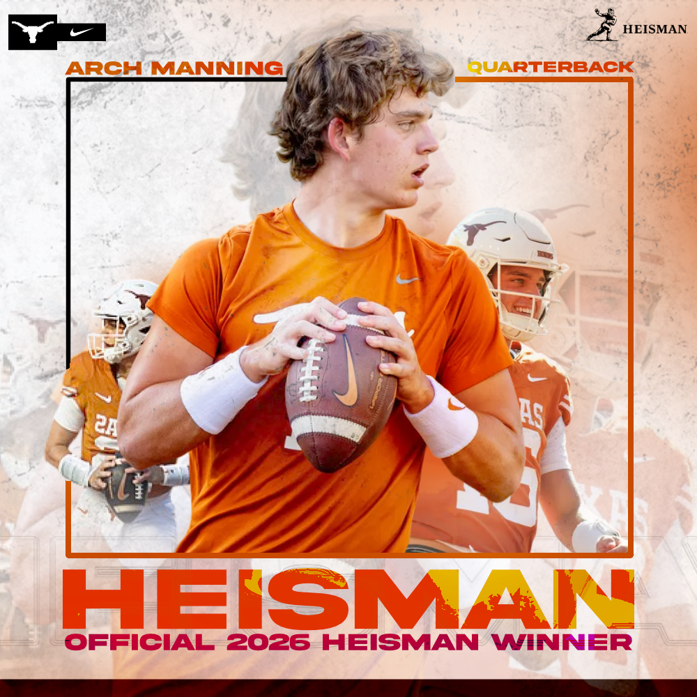
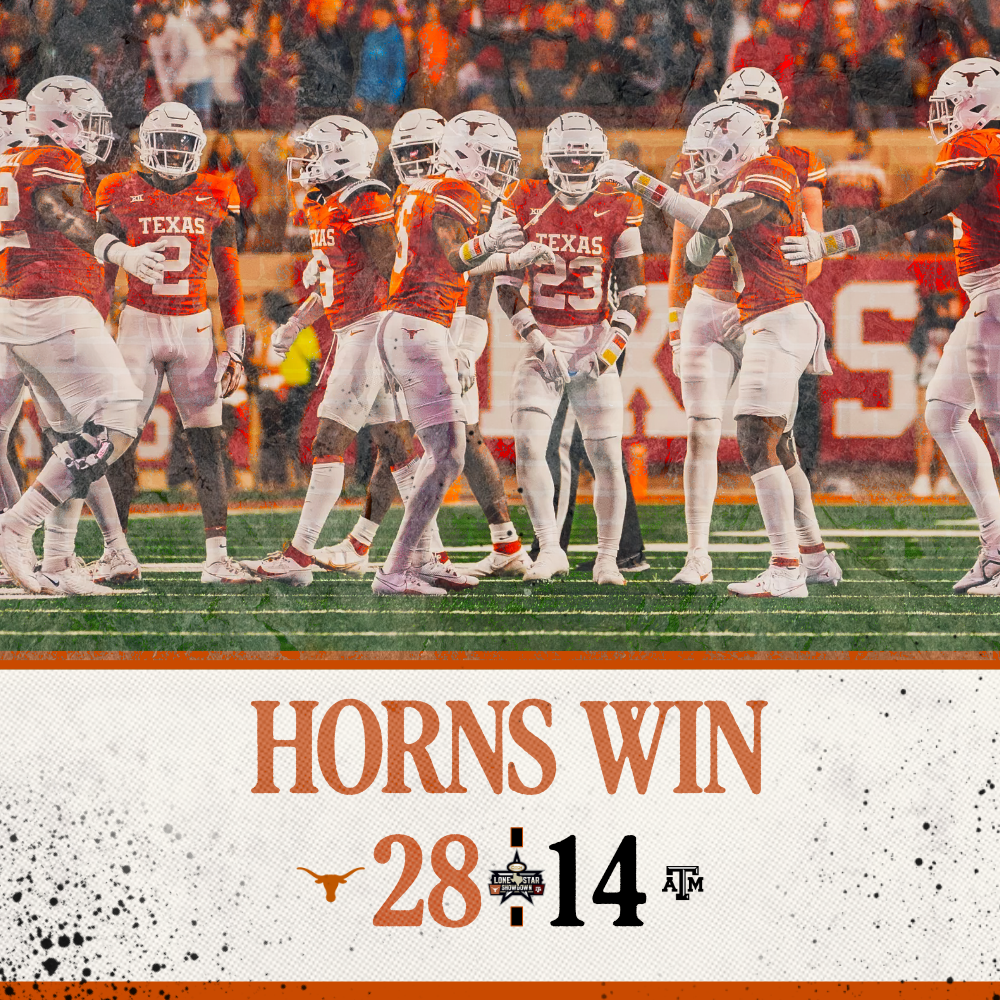
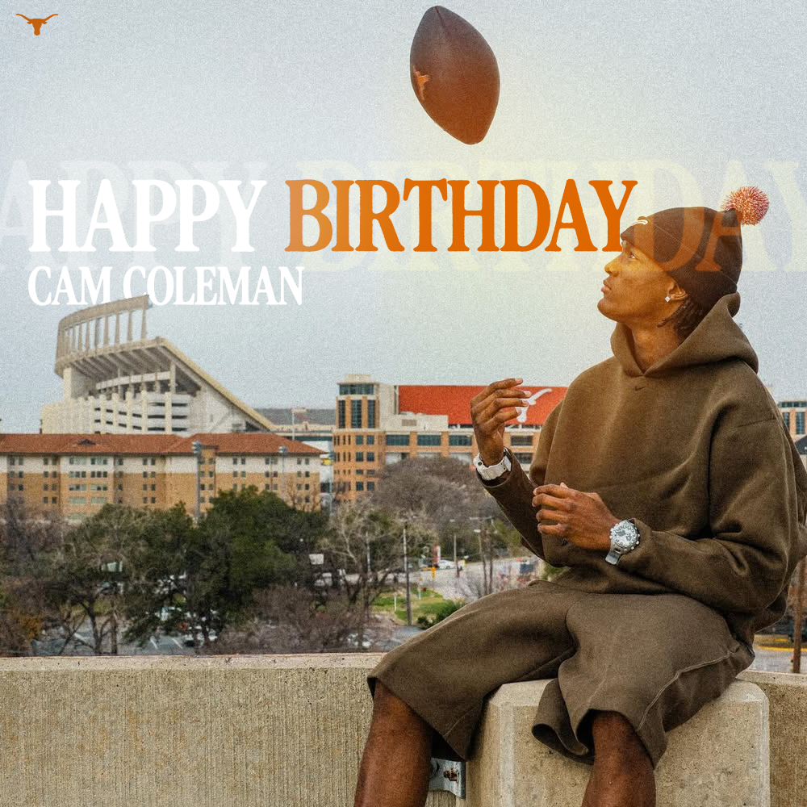
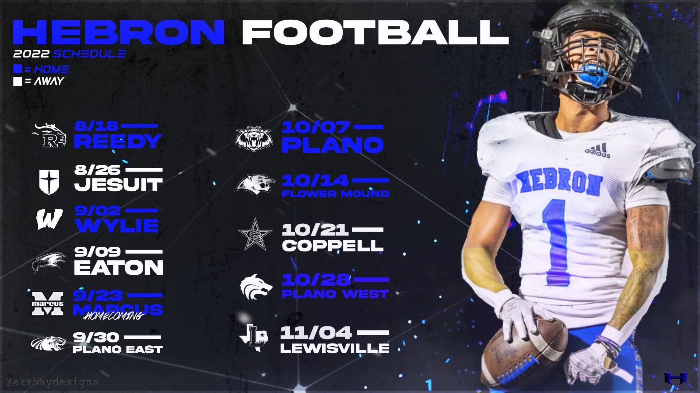
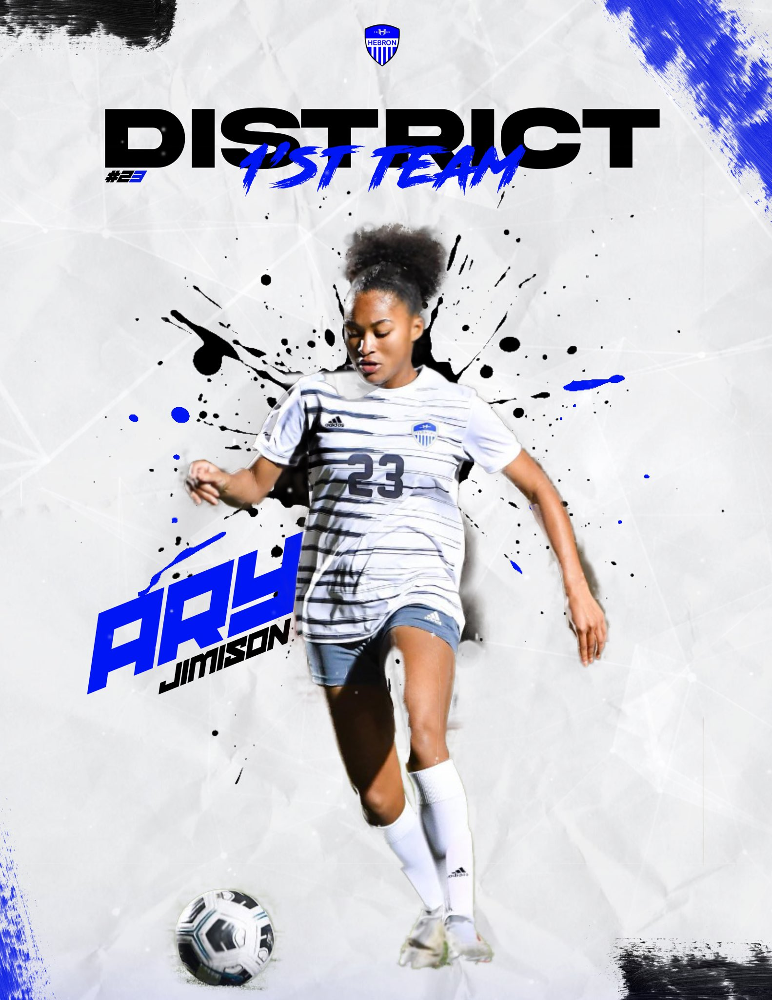
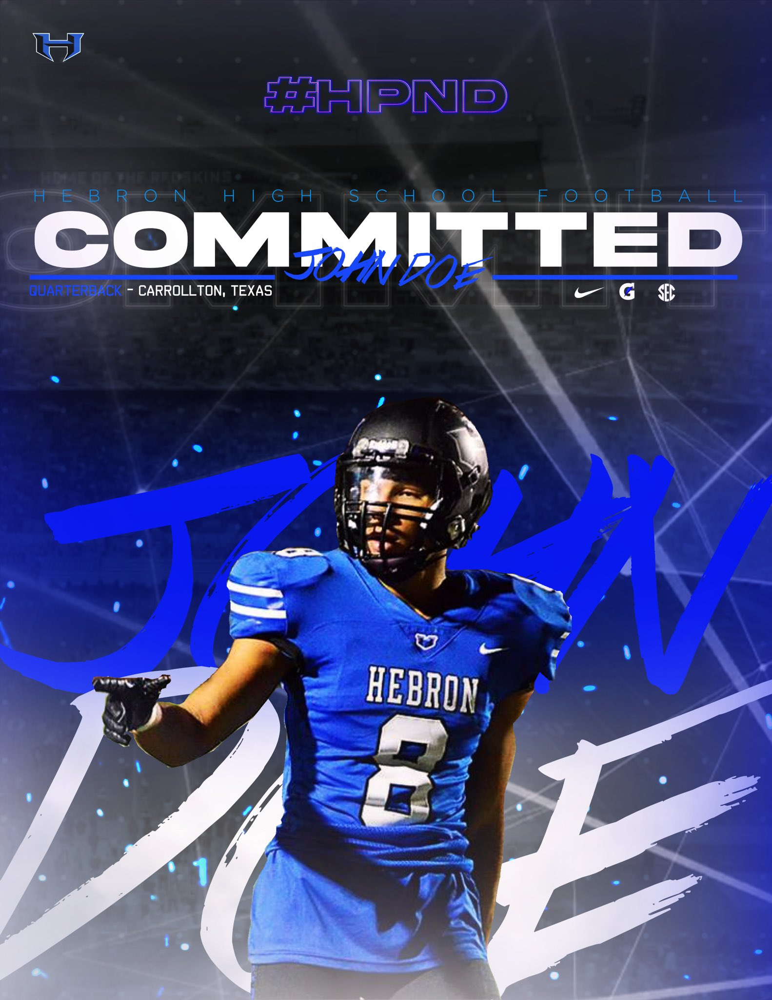
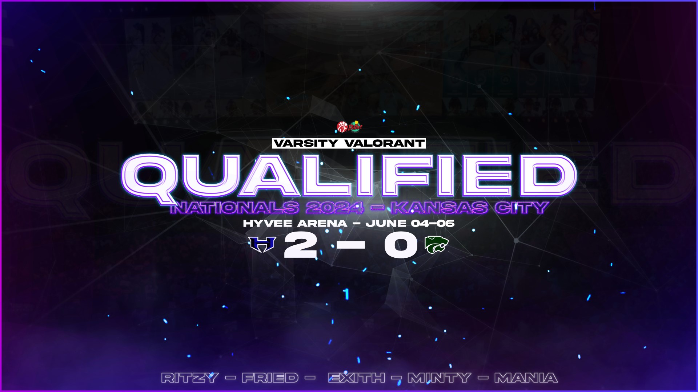
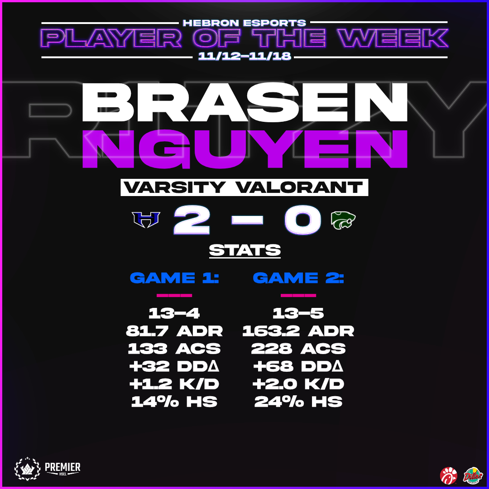
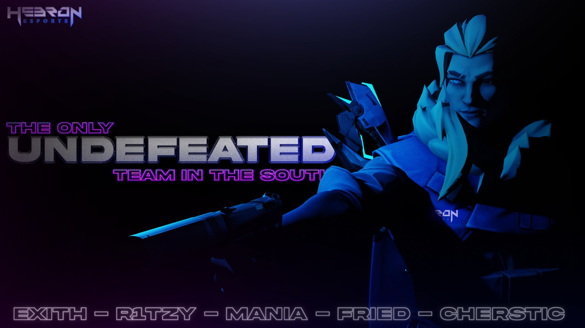

To the Texas Athletics Creative Team,
I'm Akshay Kondala, a Computer Science student at UT Austin with a creative passion that has been running parallel to my technical work for years. I build software during the day, and design, film, and edit at night. I'm applying for the Creative Student Intern role because Texas Athletics isn't just any opportunity, it's my genuine dream, and I want Texas fans to be able to share it with me.
My creative work has always lived inside competition like the Longhorns. In high school, I built the most decorated eSports program in the country from the ground up and handled the entire visual identity in-house. Tournament banners, broadcast overlays, social media graphics, hype videos, team posters, you name it, I did it. All for a program that earned 3 national championships and 7 state titles. I know how to build a brand under pressure and produce content that moves an audience, because I've had to do it consistently for years.
Beyond school, I've worked with real clients under real deadlines. Through TeamWorks Advertising, I designed brand materials and produced HD video commercials for Corteva Agriscience. Through my freelance practice, Aride Designs, I completed 85+ design projects and $1K+ in contracts for faculty, organizations, and companies. And I've spent years in the gaming content space, creating channel banners, stream overlays, thumbnail designs, and highlight edits for competitive teams and individual creators.
What makes me different: I bring a software engineer's mindset to creative work. I've automated batch video exports with Python + OpenCV, built scalable template systems, and trained myself to move fast without sacrificing quality. At the pace Texas Athletics operates, that combination is rare in a design intern.
I'm also an active member of Texas Raas so I perform, rehearse, and compete alongside my team. I understand what it means to represent something bigger than yourself and to create work that makes a crowd feel something. I want to bring that same energy to the content I build for the Forty Acres.
The work below is a cross-section of what I can bring: sports graphics, brand and commercial design, gaming content, and live-event video production. I'd be honored to contribute that range to Texas Athletics.
Conceptual sport graphics built in the Texas Athletics visual identity — layouts designed for game day, social, and in-venue use.

Texas Football — Graphic 1

Texas Football — Graphic 2

Texas Football — Graphic 3
Sports graphics produced for Hebron High School athletics — posters, social posts, and event assets across multiple varsity programs.

Hebron Athletics — Graphic 1

Hebron Athletics — Graphic 2

Hebron Athletics — Graphic 3
Visual identity for the most decorated high school eSports program in the country — banners, overlays, posters, and social assets across 4 years of national competition.

Hebron eSports — Graphic 1

Hebron eSports — Graphic 2

Hebron eSports — Graphic 3
Shot and edited live competition footage for Texas Raas — capturing performance under real event conditions. Produced with Adobe Premiere Pro.